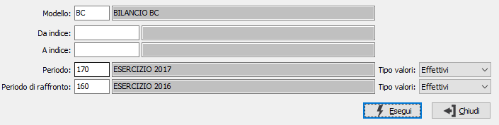

Stampa indici di bilancio
La procedura effettua la stampa degli indici di bilancio calcolati in base alle voci ed ai valori relativi al modello ed al periodo indicati.

MODELLO: inserire il modello da utilizzare per l'elaborazione. Sul campo sono attive le funzioni di ricerca (F9) sulla tabella stessa.
DA INDICE: indicare l'indice da cui si vuole iniziare la stampa. Lasciando il campo vuoto si inizierà con il primo indice, relativo al modello selezionato, presente in archivio. Sul campo sono attive le funzioni di ricerca (F9) sulla tabella stessa.
A INDICE: indicare l'indice con cui si vuole terminare la stampa. Lasciando il campo vuoto la stampa terminerà con l'ultimo indice, relativo al modello selezionato, presente in archivio. Sul campo sono attive le funzioni di ricerca (F9) sulla tabella stessa.
PERIODO: inserire il periodo da utilizzare per l'elaborazione. Sul campo sono attive le funzioni di ricerca (F9) sulla tabella stessa.
VALORI: indicare per quali valori, relativi al periodo, si desidera effettuare l'elaborazione: i valori effettivi, quelli rettificati oppure quelli preventivi.
PERIODO DI RAFFRONTO: inserire l'eventuale periodo da utilizzare come raffronto con il periodo principale. Sul campo sono attive le funzioni di ricerca (F9) sulla tabella stessa.
VALORI: indicare quali valori, del periodo di raffronto, si desidera raffrontare con quelli relativi al periodo principale: i valori effettivi, quelli rettificati oppure quelli preventivi.